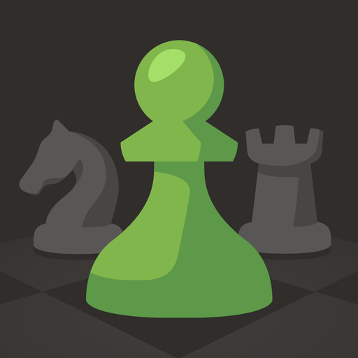

My Favorite

Chess
ในเวลาว่างผมชอบที่จะเล่นหมากรุก ถึงแม้ว่าผมจะไม่เก่งก็ตามแต่ก็เล่นเอาเพื่อความสนุกสนาน และจะพยายามพัฒนาให้ตัวเองเล่นเก่งขึ้นไปเรื่อยๆ ถึงแม้ในตอนนี้จะเรียนรู้ Gambit ได้ไม่มากแต่ก็มีความสนใจที่จะเรียนรู้เพิ่มเติมเสมอ ผมมักจะชอบเปิดเกมด้วย Italian Game ถ้าผมเล่นสีขาว และผมมักจะเล่น Caro-Kann defense ถ้าผมเล่นสีดำ

Spotify
ผมใช้ Spotify บ่อยมากๆ ใช้แทบจะทุกเวลา ผมเป็นคนที่ชอบฟังเพลงมากๆซึ่งผมเลือกที่จะใช้ Platform นี้เป็นหลัก ผมหาร Spotify กับเพื่อนมัธยมของผม หารกันมาได้ 4 ปีแล้วซึ่งก็ยังหารกันอยู่จนถึงปัจจุบันนี้ วงที่ผมชอบฟังก็คือ Arctic Monkeys, The Last Shadow Puppets, The Smiths และอื่นๆ
youtube
เรียกได้ว่าเป็นเพื่อนคู่ใจตอนกินข้าว ตอนเรียนหนังสือ ตอนเหงา ตอนไหนก็ตามก็จะมี Youtube อยู่เป็นเพื่อนเลย ตอนกินข้าวผมจะชอบดูช่อง Veritasium และ 3blue1brown ในตอนว่างๆผมดูไปเรื่อยเปื่อย สปอยหนังบ้าง เกมบ้าง สารคดีบ้าง และอื่นๆอีกมากมาย

Social Media หลักที่ผมใช้เป็นประจำ และเป็นที่ที่เพื่อนๆของผม Active มากที่สุด ผมมักจะใช้ Instagram ในการติดต่อคุยกับเพื่อน รวมถึงเอาไว้ลง Story ประจำวันของตัวเอง ผมมักจะชอบดู Reels ด้วยเช่นเดียวกัน ผมชอบดูแมวและก็การ์ตูน Chiikawa